We Cover
01
Industry 4.0
Industry 4.0 conceptualizes rapid change to technology, industries, and societal patterns and processes in the 21st century due to increasing interconnectivity and smart automation. This emphasis on the fact that inorder to move forward you need to keep your tools updated with the latest trends. The main use of Industry 4.0 technology is to help you manage and optimize all aspects of your manufacturing processes and supply chain.
02
Energy & Utililty
By IOT, the method of measuring water quality or water level can be done automatically from far off locations via advanced telematics. By using devices like sensors and probes, several parameters of water can be measured in real-time and can take useful actions to ensure optimum water quality. The applications of the water quality systems in different fields are limitless and will, therefore, change the way these sectors operate.
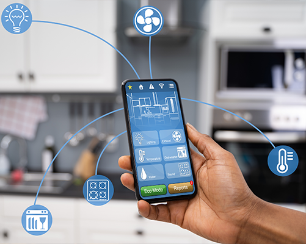
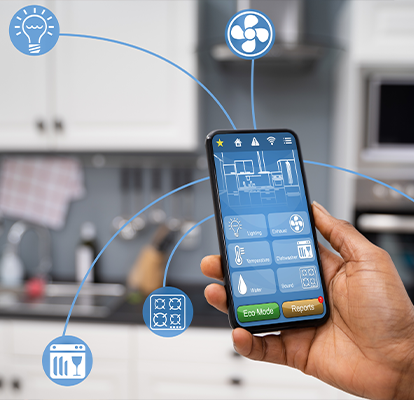
03
Oil & Gas
Businesses operating under the Oil and Gas Industry face challenges while monitoring tank levels.We provide an IoT Solution for Oil Tank Level Monitoring capture real-time production data from embedded sensors, process the data into information on the IoT Platform and provide the relevant information to the users on its mobile/web apps.
With this huge pile of information, you can eradicate a huge human capital requirement which results in a large cut in operational expenses.
With this huge pile of information, you can eradicate a huge human capital requirement which results in a large cut in operational expenses.
04
Logistics
One of the examples is the Smart seat occupancy detection system in buses which gives the occupancy details of the bus seats remotely (real time or historical) but also the exact bus location, total number of pickup/drops, bus stop points, number of passengers entered/left throughout the entire bus journey and much more.
Using the technology of IOT, this system counts reliably with an accuracy of all people boarding and alighting.
Using the technology of IOT, this system counts reliably with an accuracy of all people boarding and alighting.
05
Aquaculture
IoT technologies have revolutionized fish farming processes using sensor networks to measure values such as pH, temperature and other parameters. Aquaculture management can be automated to be easily and remotely monitored from other locations saving time and money making aquaculture operations more efficient and even eco-friendly.
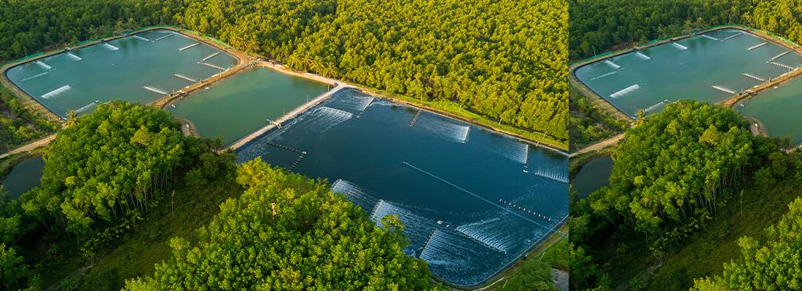
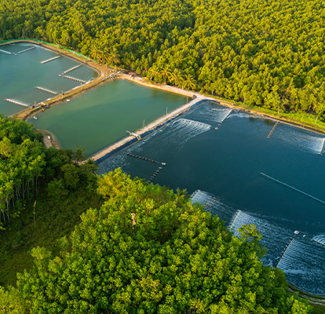
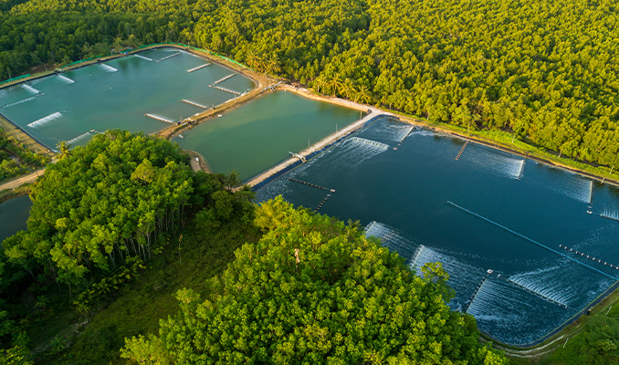
06
Agriculture
We provide IOT systems that allow devices across a farm to measure all kinds of data remotely and provide this information to the farmer in real time.These, IOT devices can gather information like soil moisture, chemical application, dam levels and livestock health - as well as monitor fences, vehicles and weather.
IoT in agriculture helps farmers to monitor vital information like humidity, air temperature and soil quality using remote sensors, and to improve yields, plan more efficient irrigation, and make harvest forecasts.
IoT in agriculture helps farmers to monitor vital information like humidity, air temperature and soil quality using remote sensors, and to improve yields, plan more efficient irrigation, and make harvest forecasts.
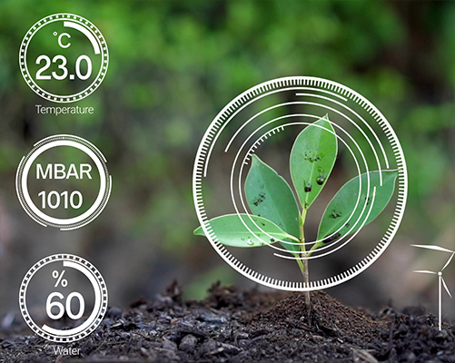
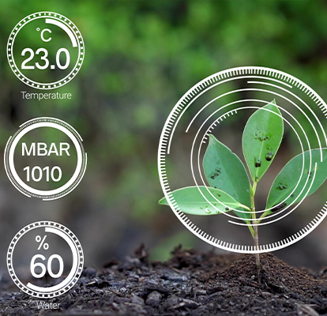
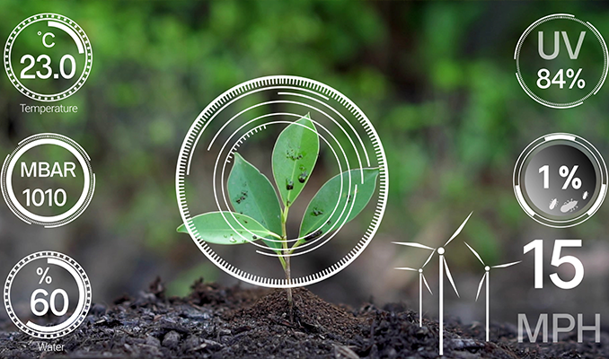
 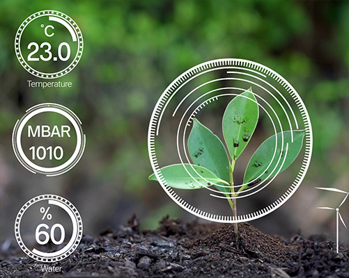
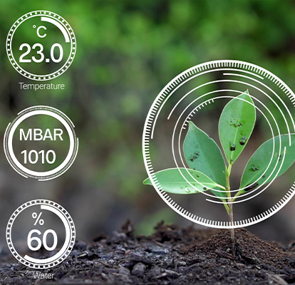
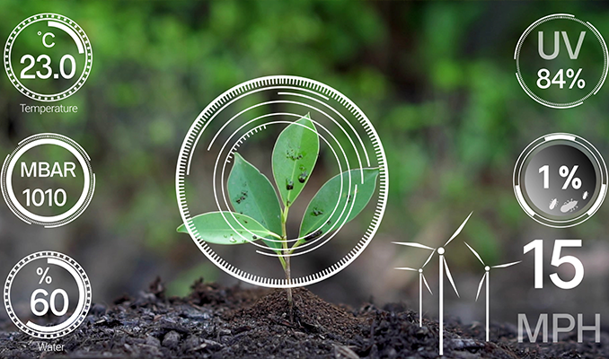
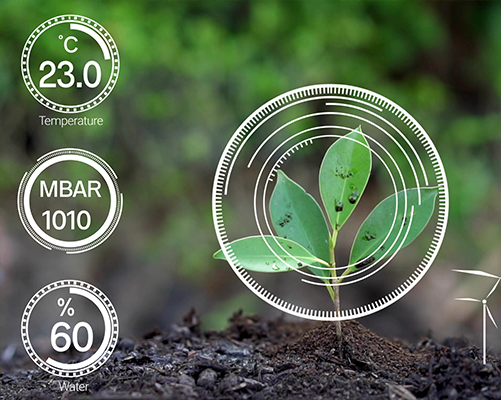
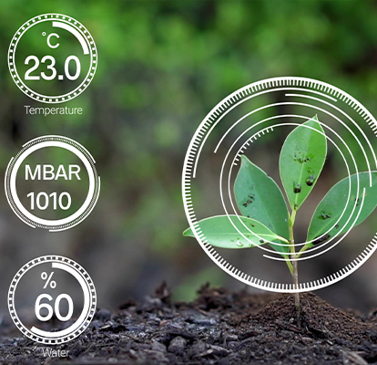
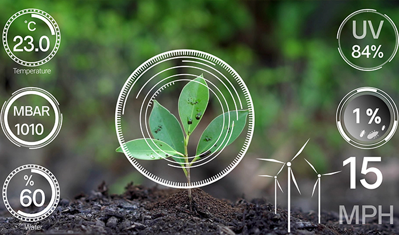
07
Consumer IoT
Home IoT: We provide IoT devices such as connected sensors, lights, and meters to collect and analyze data. We then use this data to improve infrastructure, public utilities and services, and more.
Smart Hotel: Using our IOT systems guests can check into a hotel and unlock their room via their mobile device, providing a seamless hospitality experience. Moreover, mobile integration gives you data (with the guests' permission) that lets you remember guest preferences.
Water Motor Automization: This IOT water meter system is made up of a combination of water level sensors, configured to work in synchronization.The water level sensor automatically detects water level and water supply, and then signals the pump regarding operations.
Smart Hotel: Using our IOT systems guests can check into a hotel and unlock their room via their mobile device, providing a seamless hospitality experience. Moreover, mobile integration gives you data (with the guests' permission) that lets you remember guest preferences.
Water Motor Automization: This IOT water meter system is made up of a combination of water level sensors, configured to work in synchronization.The water level sensor automatically detects water level and water supply, and then signals the pump regarding operations.
08
Remote Monitoring Solutions
Remote Monitoring of IoT Devices utilizes special IoT Events to collect, analyze, and detect faults and/or suboptimal performance to generate events in real time. These events are then used to invoke automatic alerts and actions to automate diagnostics and initiate maintenance requests for that device.
They are designed to control large or complex facilities such as factories, power plants, network operations centers, airports, and spacecraft, with some degree of automation.
They are designed to control large or complex facilities such as factories, power plants, network operations centers, airports, and spacecraft, with some degree of automation.
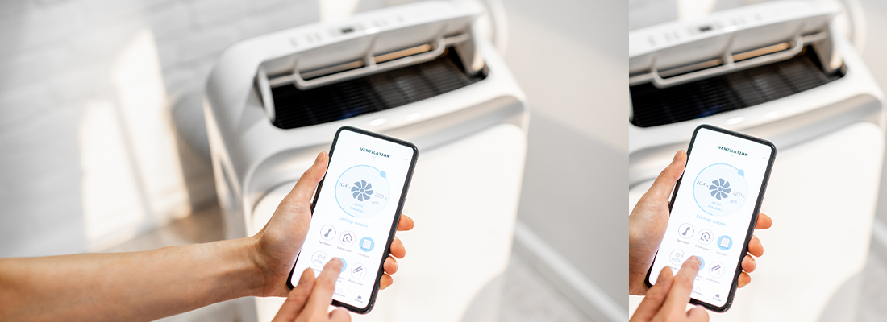
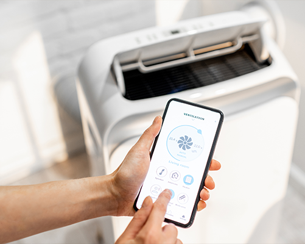
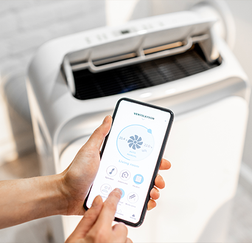
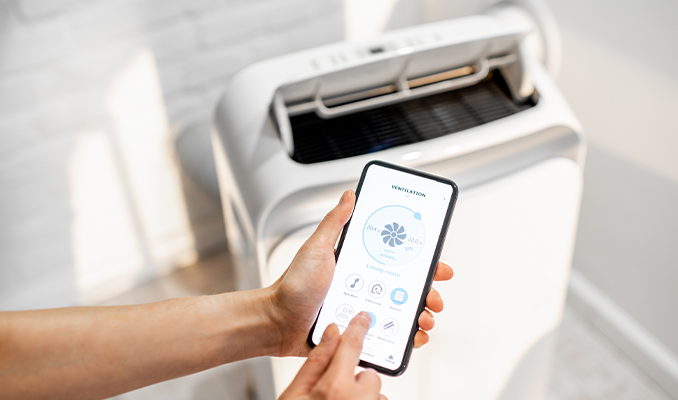